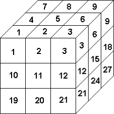

Zadania trzeciego etapu Konkursu Informatycznego dla gimnazjalistów LOGIA 11
Zadanie 1 (pionek).
|
Dużą sześcienną kostkę podzielono na 27 małych kostek, z których 25 jest białych, a 2 czerwone. Pionek może poruszać się we wnętrzu dużej kostki, w każdym ruchu przeskakując pomiędzy środkami sąsiednich (tj. stykających się ścianami) małych kostek. Napisz funkcję PIONEK :s, która dla kostki opisanej daną :s, wyliczy minimalną liczbę ruchów, jaką musi wykonać pionek, aby pokonać drogę pomiędzy czerwonymi kostkami. Dana :s to słowo o długości 27, złożone z liter b (biała kostka) oraz c (czerwona kostka). Kolejne litery opisują kostki zgodnie z numeracją na rysunku. Przykłady:
|

|
Zadanie 2 (kostka).
Kilka osób gra z użyciem sześciennej kości. Gra składa się z kolejnych rund, w każdej rundzie każdy rzuca kością i zapisuje swój wynik. Gra kończy się po zakończeniu rundy, w której ktoś wyrzuci szóstkę. Ten, kto wyrzucił szóstkę, wygrywa. Jeśli więcej niż jeden gracz wyrzucił szóstkę, to wygrywa ten z nich, którego suma oczek we wszystkich rozegranych rundach jest największa. Jeśli takich graczy jest więcej, to rozgrywają oni kolejne dogrywki, zgodnie z zasadami określonymi w grze, aż do wyłonienia zwycięzcy.
Napisz funkcję KOSTKA :gra, której wynikiem jest imię zwycięzcy. Dana :gra jest listą dwuelementowych list opisujących grę (z ewentualnymi dogrywkami). Każda dwuelementowa lista składa się z imienia gracza i słowa zawierającego liczby oczek uzyskane w kolejnych rundach (tj. ciągu cyfr, w którym występują cyfry od 1 do 6).
Przykład:
| Wynikiem | KOSTKA [[Danka 555][Andrzej 236116][Marek 326336616][Adam 416516636][Karol 416126] [Grzesio 1461564][Krzysio 342]] | jest "Adam |
| (Danka i Krzysio odpadli po trzeciej rundzie, Andrzej i Karol po szóstej, Grzesio po siódmej, a Marek i Adam grali do końca - w sumie trzy dogrywki, suma oczek Adama była większa niż suma oczek Marka). |
Zadanie 3 (zgadnij).
Małgosia powiedziała na głos pewną liczbę i pomyślała o drugiej, która na pewno jest mniejsza. Obie liczby są całkowite dodatnie. Jaś próbuje zgadnąć tę liczbę, którą pomyślała Małgosia. Także mówi na głos liczbę i pyta Małgosię, czy to ta liczba. Na każde pytanie Małgosia udziela jednej z trzech odpowiedzi: moja liczba jest mniejsza, moja liczba jest większa, bądź moja liczba jest równa. Dodatkowym utrudnieniem jest założenie, że Małgosia raz może udzielić nieprawidłowej odpowiedzi. Jaś i Małgosia postanowili zapisywać przebieg gry w postaci listy dwuelementowych list - pierwszy element pary to liczba, jaką podaje Jaś, drugi to odpowiedź Małgosi - odpowiednio litera m, w, bądź r.
Napisz funkcję JAKIE :max :pytania, gdzie dana :max to liczba wypowiedziana przez Małgosię, a :pytania to lista opisująca przebieg gry. Wynikiem funkcji jest lista przedziałów, w których może wystąpić liczba pomyślana przez Małgosię. Powinna ona być możliwie najkrótsza i uporządkowana rosnąco.
Przykład:
| Wynikiem | JAKIE 10 [[5 m][2 w][4 m][1 w]] | jest [[2 4]], |
| Wynikiem | JAKIE 10 [[5 m][2 w][1 w][6 r]] | jest [[3 4][6 6]]. |
Zadanie 4 (wycieczka).
Ola wybrała się na wycieczkę w góry. Na szczyt, który postanowiła zdobyć, prowadzi wiele dróg przechodzących przez różne polany. Na polanach drogi mogą się krzyżować. Na każdej polanie, a także w dolinie, z której Ola rozpoczyna wędrówkę, stoją drogowskazy z nazwą polany pośredniej (lub szczytu, jeśli jest bezpośrednie wejście na szczyt) oraz czasem przejścia danego fragmentu drogi. Janek postanowił obliczyć, w jakim czasie najszybciej Ola jest w stanie wejść na szczyt. Oznaczył dolinę literą d, szczyt literą s, natomiast polany literą p z kolejnymi numerami. Informacje z drogowskazów zapisywał w postaci list trójelementowych [odMiejsca doMiejsca czasPrzejścia]. Na przykład [p1 p5 30] oznacza, że z polany p1 można przejść bezpośrednio na polanę p5 w czasie 30 minut.
Napisz funkcję DROGA :drogowskazy, której wartością jest minimalny czas wędrówki Oli. Dana :drogowskazy jest listą list opisujących poszczególne drogowskazy. Zakładamy, że istnieje co najmniej jedna droga na szczyt. Ola nie błądzi, czyli nie ma drogowskazów, które kierują w kółko przez te same polany.
Przykłady:
| Wynikiem | DROGA [[d p1 10][d p2 20][p1 p3 20][p2 p3 5][p2 s 30][p3 s 5]] | jest 30, |
| ponieważ najszybsza droga prowadzi przez polany p2 i p3 - 20+5+5. Przez polany p1 i p3 czas wynosi 35, a tylko przez polanę p2 - 50. |